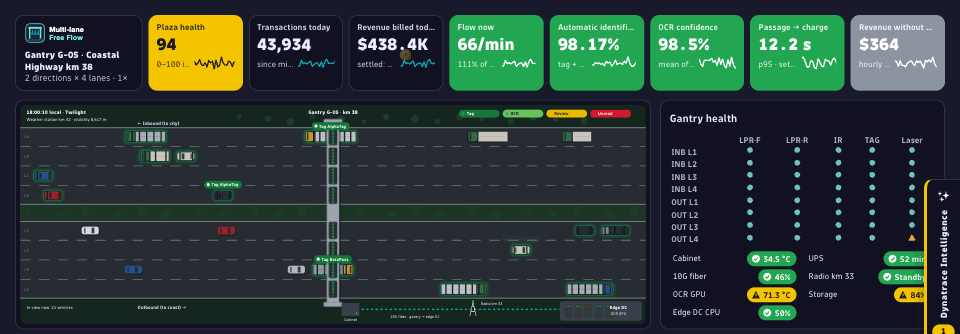
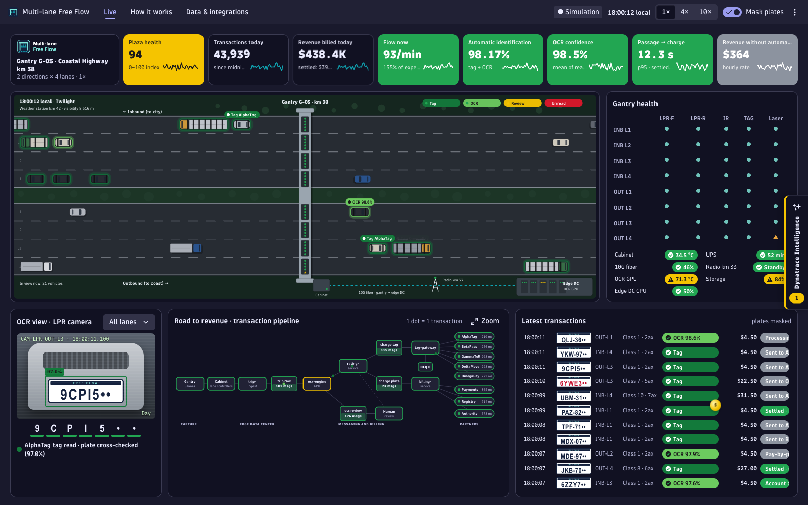
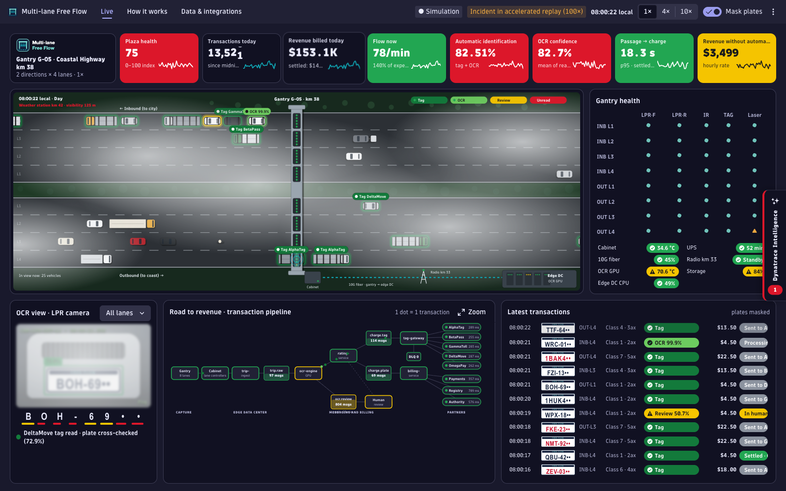
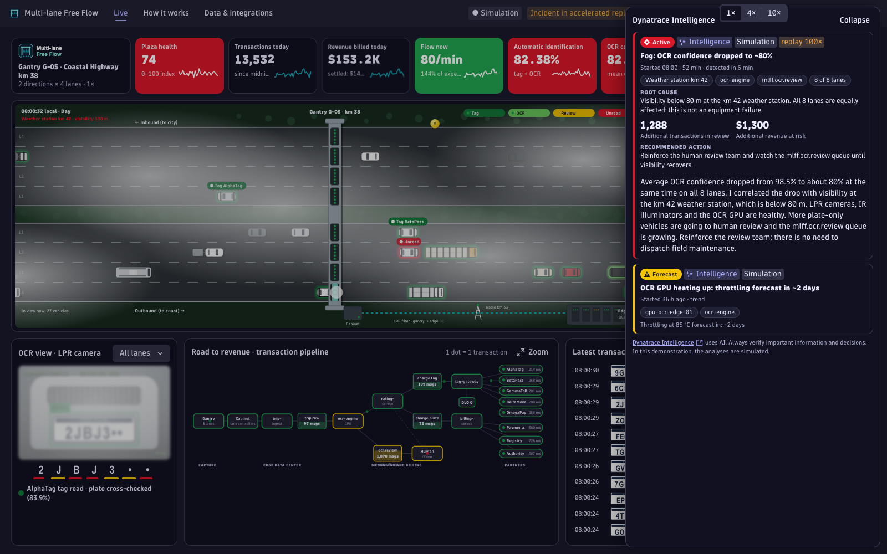
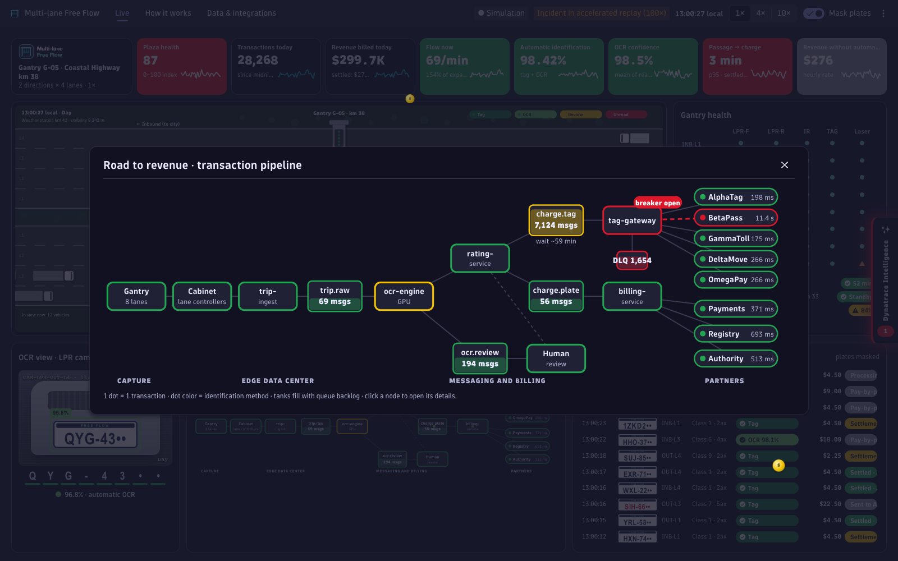
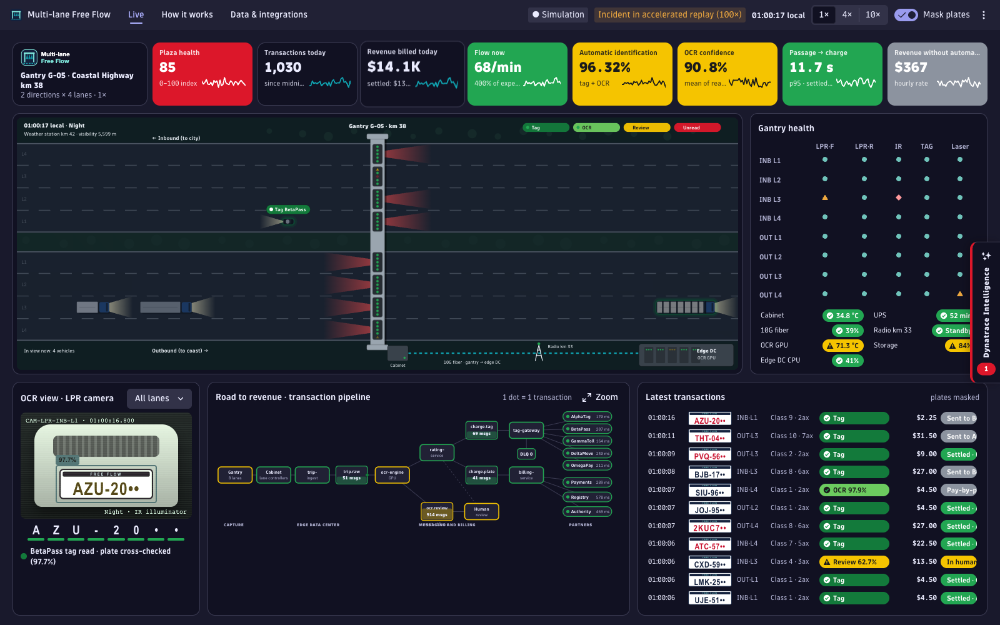
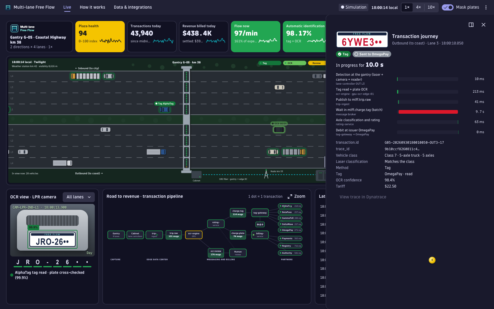
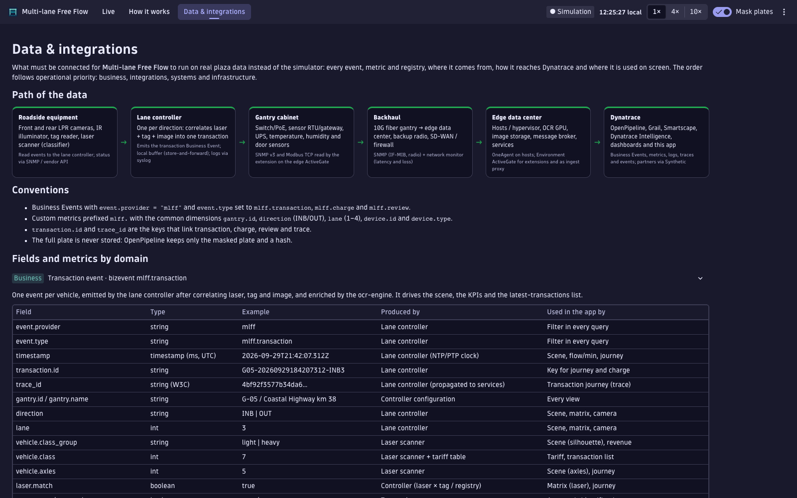

A live, animated multi-lane free-flow toll gantry inside Dynatrace: every vehicle, tag read, plate read and charge on screen — and Dynatrace Intelligence explaining, in dollars, what goes wrong.

⚠️ Disclaimer: Created and maintained by @adrianorafael with no affiliation with Dynatrace and no responsibility for any failures, issues, or consumption of resources and licenses. It is a study/demo version with no official support. Installing it in your environment is at your own risk. You are equally free to improve and expand its features. "Multi-lane Free Flow" is a fictitious operator; all data is simulated.
Dark theme · simulated data for a fictitious operator. Click any image to open it at full size.







A demo-ready story from the road to revenue: see the traffic, see the money, and see Dynatrace find the problem.
2 directions × 4 lanes. Laser sweeps, tag pulses and camera flashes at the gantry; a colored halo and badge show tag, OCR, review or unread.
Plaza health, transactions and revenue today, flow vs expected, automatic identification, OCR confidence, passage-to-charge p95.
The last plate decoded character by character with per-character confidence; the image blurs in fog and goes dark when the IR illuminator fails.
One dot per transaction through edge services, queue tanks, rating, tag gateway and partners; coins fly to the revenue KPI when charges settle.
Collapsible drawer with root cause, affected entities, live impact, time to detection, recommended action and a streamed explanation.
Six scenarios, 1× / 4× / 10× speed, simulated hour, seed, 5-minute automatic tour, TV mode, "Dynatrace sources" overlay and a demo summary.
Click any vehicle or row for a trace-like waterfall from detection at the gantry to the settled charge.
Every event field, metric per device type, reference table and rollout step needed to run the app on real data.
The important behaviors to understand before running it in a real environment.
No data leaves or enters the tenant. The operator, gantry, tag issuers, partners, plates and incidents are fictitious; Intelligence texts are scripted per scenario.
Rates come from the live vehicles; accumulated values (backlog, revenue at risk, duration) follow a scripted timeline at about 100×. The header says so whenever it is active.
Volume, day/night and headlights follow the viewer's clock. Use the presenter's simulated hour for a peak at any time of day.
The same seed replays the same sequence of vehicles, so a demo can be rehearsed.
When the tab is hidden only the daily totals advance; vehicles resume when you return.
Masking, pinned camera, TV mode and the optional dashboard ID live in localStorage.
A vanilla Dynatrace App Toolkit project — the kind you can scaffold and extend yourself.
my.multi.lane.free.flow
Version 0.1.0 runs no DQL queries and no app functions: it creates no Grail query consumption. The figures below are for a future real-data mode that is not shipped.
| Cost driver | Impact in data-driven apps | This version |
|---|---|---|
| Auto-refresh / polling | Dominant — 1 query per interval, per open tab | Not applicable (no queries) |
| Timeframe width | Medium — wider window = more data scanned | Not applicable |
| Concurrent users / tabs | Linear | No effect |
| Data volume | Env-dependent | No effect |
Monthly scenarios
| Scenario | Queries / month | GB scanned | Est. cost* |
|---|---|---|---|
| Version 0.1.0 (simulator), any usage | 0 | 0 | None |
A future real-data mode would poll Business Events — polling is the dominant cost driver. No such query
ships yet, so there is no measured figure to publish: measure scannedBytes for your own query first, then
GB/month ≈ GB_per_query × queries_per_hour × hours_per_day × days × concurrent_tabs.
* Multiply GB scanned by your DPS "Grail Query – data analyzed" rate — the amount depends entirely on your rate card.
metadata.grail.scannedBytes
from queryExecute.| fields … (Grail is columnar).# configuration app.config.json # environmentUrl (placeholder), app id, version, icon, scopes (none) ui/app/ ├── sim/ # simulator: engine, model, scenarios, journey, calibration tests ├── scene/ # animated gantry (SVG, imperative) ├── components/ # KPIs, OCR camera, pipeline, feed, health, Intelligence, details ├── pages/ # Live, How it works, Data & integrations ├── data/ # real-data field and metric map ├── state/ # engine context, animation loop, shortcuts, tour ├── theme/colors.ts # status and brand palette (single source of color) └── App.tsx # route definitions ui/assets/ # fictitious brand logos and app icon specs/ # the approved spec docs/ # this page scripts/ # scan-secrets.sh, pre-commit, test-sim.mjs
From zero to the app running for every user of your tenant, in about five minutes.
app-engine:apps:install and app-engine:apps:run
in the target environment (ask your Dynatrace admin if not). You also need Node.js 24 and npm ≥ 9.git clone https://github.com/adrianorafael/multi-lane-free-flow.git cd multi-lane-free-flow npm install
app.config.json, replace YOUR-ENVIRONMENT in
environmentUrl with your tenant ID — copy it from your browser's address bar:
https://YOUR-TENANT-ID.apps.dynatrace.com/.npx dt-app dev, then open the
local-dev-server link it prints (not localhost:3000 directly).npx dt-app deployThe first run opens your browser for the Dynatrace login. The app declares no OAuth scopes, so there is no data-access consent screen.
app.version and run npx dt-app deploy again;
npx dt-app uninstall removes it (needs app-engine:apps:delete).npm run start — dev servernpm run build — production buildnpm run deploy — deploy to your envnpm run lint · typecheck · test:sim · scan:secrets| Symptom | Cause & fix |
|---|---|
'app.description' must NOT have more than 80 characters |
Shorten the description in app.config.json. |
| Deploy fails because the version already exists | Bump app.version in app.config.json (and CHANGELOG, README, page). |
The app opens at localhost:3000 but looks broken |
Open the link printed by npx dt-app dev — the app must run inside Dynatrace. |
| Few vehicles on screen | It is night or early morning in your time zone: use the presenter panel's 6 pm simulated hour or the holiday exodus scenario. |
| Nothing moves | The simulation is paused (Space) or the browser tab was hidden; press Space. |
| Animations feel heavy on a slow laptop | Use 1× speed, avoid combining several scenarios, or enable the OS "reduce motion" setting. |
| "Open dashboard" button missing | Paste a dashboard document ID into the presenter panel; the button only shows when set. |
| Warning about the Node.js version | dt-app supports Node 24; newer versions work but print a warning. |